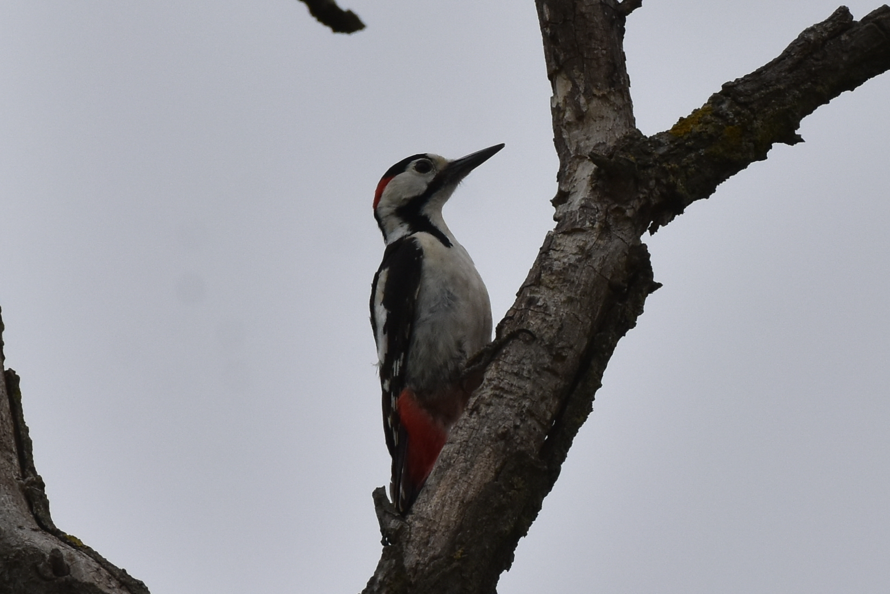

Dendrocopos syriacus
Un pic qui vit parmi les arbres et les hommes
Le Pic syriaque est un oiseau sédentaire des paysages arborés ouverts, depuis les boisements clairsemés jusqu'aux vergers et aux vieux jardins. Son nom scientifique, Dendrocopos syriacus, le rattache à la famille des Picidae, mais ne signifie pas qu'il est limité à la Syrie : son aire traverse certaines parties de l'Europe, du Caucase et de l'Asie occidentale. Long d'environ 21–24 cm, il associe le noir et le blanc à une zone rose rougeâtre sous la queue. Dans des régions arabes fréquentées par de nombreux migrateurs saisonniers, il offre un autre exemple : celui d'un oiseau dont la vie dépend toute l'année des arbres de sa région.
En novembre, on peut le rechercher dans ses habitats connus sans attendre une vague migratoire. Sa présence automnale correspond surtout à la sédentarité, même si certains individus se déplacent localement. Ses cris le signalent parfois avant qu'on l'aperçoive sur un tronc, tandis que son vol ondulant devient visible lorsqu'il passe d'un arbre à l'autre. Une visite sans observation ne prouve pas sa disparition : il peut circuler entre des parcelles boisées et des vergers séparés.
Identifier l'espèce, le sexe et l'âge
Deux grandes taches blanches ressortent sur les épaules, et des marques claires traversent les ailes noires. La face est largement blanche. La ligne noire qui part de la base du bec vers le côté de la poitrine ne ferme pas l'espace blanc derrière la joue comme chez le Pic épeiche. Cette ouverture blanche constitue un caractère important, complété par le peu de blanc sur les rectrices externes et par les sous-caudales d'un rouge plus doux, tirant sur le rose. Mieux vaut réunir ces indices que se fier uniquement à la taille.
Le mâle adulte porte une tache rouge sur la nuque, absente chez la femelle adulte. Le jeune présente du rouge au sommet de la tête : cette couleur ne suffit donc pas à reconnaître un mâle adulte. La ressemblance des jeunes avec d'autres pics peut compliquer l'identification. Une vue de profil de la tête et une photographie de la queue facilitent la documentation, à condition de les obtenir sans poursuivre l'oiseau ni frapper un arbre occupé pour le faire sortir.
Dans les pays arabes : une présence locale, non uniforme
En Syrie, l'espèce fréquente les boisements et les vergers, notamment les montagnes côtières, l'Anti-Liban et les environs de Damas. Les références syriennes la signalent aussi autour d'Alep et dans la Ghouta. Cette répartition forme une mosaïque écologique, et non une présence continue sur tout le territoire. En Palestine, la plateforme Mahmiyat la décrit comme commune ; une étude scientifique ancienne documente sa reproduction dans la bande de Gaza. Cette étude historique ne suffit cependant pas à estimer les effectifs ou l'état actuel des habitats.
En Jordanie, la liste de Jordan BirdWatch actualisée en mai 2020 la classe parmi les espèces résidentes. Les travaux de l'association l'incluent parmi les oiseaux nicheurs des paysages agricoles traditionnels arborés du nord. En Irak, la liste commentée des oiseaux mentionne sa présence dans les boisements septentrionaux. Ces milieux diffèrent des déserts ouverts et des zones humides. Une inscription sur la liste d'un pays ne signifie donc ni une présence partout ni l'arrivée d'un visiteur hivernal.
Au Liban : reproduction documentée et prudence historique
La Société pour la protection de la nature au Liban explique qu'une référence de 1974 considérait l'espèce comme disparue localement, avant la confirmation de sa reproduction à Qammouha et Fneideq en 1995. Des nidifications ont ensuite été notées entre 1996 et 2005 dans des sites montagneux et autour d'Aammiq et de Qaraoun, avec des individus en dispersion dans la vallée du Litani. Cette histoire rappelle qu'une absence de données ou une ancienne appréciation du statut ne doit pas devenir une description permanente.
Dans son compte rendu publié en 2021, l'association évoque un déclin local ultérieur et cite les coupes d'arbres, le dérangement, les persécutions et la chasse illégale parmi les pressions. Il s'agit d'une appréciation libanaise datée, non d'un nouveau recensement de toutes les populations arabes. De même, le classement mondial en Préoccupation mineure n'exclut pas la perte d'arbres de nidification ou la dégradation des conditions de survie dans certains sites. L'échelle mondiale ne remplace pas un suivi local répété.
Des arbres anciens et une alimentation adaptable
Ce pic a moins besoin d'une forêt dense continue que d'arbres adaptés au sein d'un réseau de milieux. Les vergers traditionnels, les jardins à grands arbres, les boisements ouverts et les abords des villages peuvent fournir nourriture et cavités potentielles. Des études européennes montrent une utilisation importante des paysages agricoles arborés. Ce succès ne signifie pas que remplacer tous les vieux arbres d'un verger arabe par de jeunes sujets maintiendrait la même fonction écologique. L'âge et la structure des arbres comptent davantage que le seul nombre de troncs.
Il consomme des larves d'insectes, des coléoptères, des fourmis et d'autres invertébrés, recherchés en frappant, en prélevant les proies et en travaillant l'écorce. Il mange aussi des graines, des fruits, des noix et des amandes, parfois coincées dans une fente pour être ouvertes. Les aliments végétaux constituent une véritable composante de son régime, sans indiquer l'abandon des insectes. Cette diversité offre des possibilités lorsque les ressources changent, notamment en automne et en hiver, mais ne garantit pas la survie si arbres et abris disparaissent.
Du tambourinage à la cavité et aux œufs
Le tambourinage répété sert à communiquer et à signaler une présence : tout bruit produit par le bec ne correspond pas à une recherche de nourriture. À la saison de reproduction, l'oiseau creuse une cavité dans un tronc ou une branche appropriée, souvent là où le bois se travaille plus facilement. L'entrée reste petite par rapport à la chambre intérieure. Dans certaines parties du Levant, les activités printanières commencent plus tôt que dans certaines régions européennes ; le calendrier polonais ne peut donc être transposé tel quel au Liban ou à la Palestine.
Les références générales indiquent environ 3–7 œufs, avec des moyennes variables selon les régions. Une étude de 73 nids dans le sud-est de la Pologne, menée en 2003–2006, a enregistré des pontes de deux à sept œufs et une incubation de 9–13 jours. Ces mesures concernent une population particulière et illustrent la brièveté de cette étape, sans fixer une durée unique pour chaque nid arabe. Les deux parents s'occupent des jeunes. La répartition précise des tâches et leur rythme nécessitent des observations répétées, non une déduction tirée d'une seule visite au nid.
Des poussins à l'indépendance, puis au reste de l'année
Les poussins éclosent dans la cavité et demandent un nourrissage régulier ; ils sont incapables de voler à la sortie de l'œuf. L'étude polonaise a mesuré un séjour de 24–30 jours au nid avant le départ. La dépendance envers les parents se poursuit ensuite un certain temps. Un jeune posé sur une branche n'est donc pas nécessairement indépendant ni abandonné. Les jeunes peuvent plus tard s'éloigner de leur lieu de naissance, expliquant certaines observations hors des sites habituels sans supposer une migration lointaine.
Une cavité ne garantit pas la réussite de la reproduction. D'autres espèces peuvent entrer en concurrence pour les trous, et la même étude a documenté le rôle des étourneaux dans des pertes de nids sur son site. Maintenir des arbres d'âges variés et des cavités de remplacement profite ainsi à l'ensemble des oiseaux. Un trou ne doit pas être bouché simplement parce qu'il paraît inutilisé. En dehors de la nidification, l'accès à la nourriture et aux abris reste essentiel : ces besoins ne cessent pas avec la fin des nichées.
Protéger et observer sans déranger
La protection concrète commence par le maintien des arbres matures et du bois dégradé sans danger pour les personnes, ainsi que par une évaluation avant élagage ou abattage. Il ne s'agit pas de laisser un arbre dangereux sans intervention, mais d'associer sécurité et préservation de l'habitat grâce à un avis compétent. Une gestion prudente des pesticides est également utile : un oiseau consommant des invertébrés a besoin de proies disponibles, pas seulement d'arbres verts mais pauvres en vie.
L'observateur garde une distance stable, laisse libre l'accès à la cavité et recule si les adultes cessent d'approcher ou multiplient les alarmes. On ne place pas de nourriture près d'un nid pour attirer l'oiseau devant l'objectif, et on ne prélève pas les jeunes en bonne santé. Les relevés gagnent en valeur lorsqu'ils indiquent habitat, date, comportement et nombre d'individus, tout en protégeant les emplacements précis des nids. Le statut mondial de Préoccupation mineure n'autorise pas la chasse et ne remplace pas les lois locales.
Photo : Лариса Артемьева / iNaturalist (CC0 1.0)